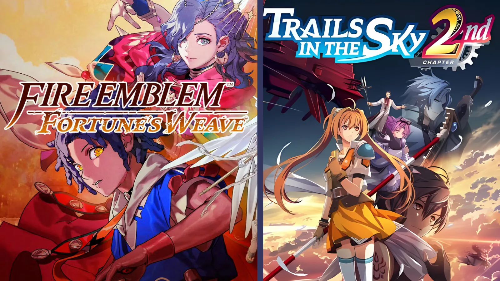

Luiso · 14 de septiembre de 2026
Arranca una nueva semana de lanzamientos y, aunque el calendario no tiene la cantidad de grandes producciones de otras semanas, sí concentra varios títulos importantes para distintos públicos.
El gran protagonista será Marvel's Wolverine, que llegará exclusivamente a PlayStation 5 el martes 15 de septiembre. Un par de días después será el turno de Fire Emblem: Fortune's Weave, mientras que los seguidores de The Legend of Heroes tendrán el esperado regreso de Trails in the Sky 2nd Chapter.
*Truck-kun is Supporting Me from Another World?!*
Switch 2
El lunes abre la semana con este curioso título que llega a Nintendo Switch 2. Se trata de un juego de combate vehicular desarrollado por Strange Scaffold y publicado por Frosty Pop.
*Marvel's Wolverine*
PlayStation 5
El gran lanzamiento de la semana. Insomniac Games lleva finalmente al mutante de Marvel a su propia aventura de acción, separándose de la estructura de mundo abierto utilizada en Spider-Man. El juego llega exclusivamente a PS5.
*RuneScape: Dragonwilds*
PC, PlayStation 5, Xbox Series X|S y Switch 2
El juego de supervivencia basado en el universo de RuneScape abandona su etapa de acceso anticipado y llega a consolas con su versión completa.
*TCG Card Shop Simulator*
PC, PlayStation 5, Xbox Series X|S, Xbox One, Switch y Switch 2
El popular simulador de gestión de una tienda de cartas llega finalmente a consolas después de su paso por PC.
*Train Sim World 7*
PC, PlayStation 5 y Xbox Series X|S
Nueva entrega del simulador ferroviario de Dovetail Games.
*Destroy All Humans! 2: Reprobed*
Switch 2
La remasterización de la aventura de Crypto llega a la nueva consola de Nintendo.
*Aniimo*
PC, PlayStation 5 y Xbox Series X|S
Uno de los lanzamientos nuevos más interesantes de la semana. Es un RPG de acción centrado en la captura y entrenamiento de criaturas, con una estructura que combina exploración y combate.
*Fallen Tear: The Ascension*
PC
Metroidvania con elementos de RPG que finalmente llega a su versión completa.
*Gladio Mori*
PC, PlayStation 5 y Xbox Series X|S
Juego de lucha basado en combates entre guerreros con espadas y una estética medieval.
*Little Witch in the Woods*
Nintendo Switch
La aventura de simulación y vida cotidiana llega a Nintendo Switch.
*Disney Epic Mickey: Rebrushed*
iOS y Android
La remasterización de Epic Mickey también llega a dispositivos móviles.
*Fire Emblem: Fortune's Weave*
Nintendo Switch 2
Uno de los grandes lanzamientos de la semana. La nueva entrega de Fire Emblem llega exclusivamente a Switch 2.
*Trails in the Sky 2nd Chapter*
PC, PlayStation 5, Nintendo Switch y Switch 2
El clásico de Falcom regresa con su esperado remake, disponible simultáneamente en PC y consolas.
*Another Eden Begins*
PC, Nintendo Switch y Switch 2
Nueva propuesta dentro del universo de Another Eden, que llegará a PC y consolas de Nintendo.
*Artis Impact*
Nintendo Switch
El RPG independiente que combina aventura, exploración y elementos de simulación llega a Switch.
*Endless Legend 2*
PC, PlayStation 5 y Xbox Series X|S
La estrategia 4X de Amplitude Studios alcanza su versión 1.0 y se expande a consolas.
*Granblue Fantasy Versus: Rising*
Switch 2
El juego de lucha de Cygames recibe su versión para la nueva consola de Nintendo.
*Kernel Hearts*
PC, PlayStation 5, Xbox Series X|S y Switch 2
Roguelike de acción con estética de magical girls y cooperativo para hasta cuatro jugadores. Los equipos deberán ascender por la Torre de Babel y enfrentarse a diferentes enemigos y jefes.
*LEGO Batman: Legacy of the Dark Knight*
Nintendo Switch 2
La nueva aventura de LEGO protagonizada por Batman llega a Switch 2.
*The Walking Dead: Streets of Survival*
PC, PlayStation 5, Xbox Series X|S, Switch y Switch 2
Nueva propuesta basada en el universo de The Walking Dead.